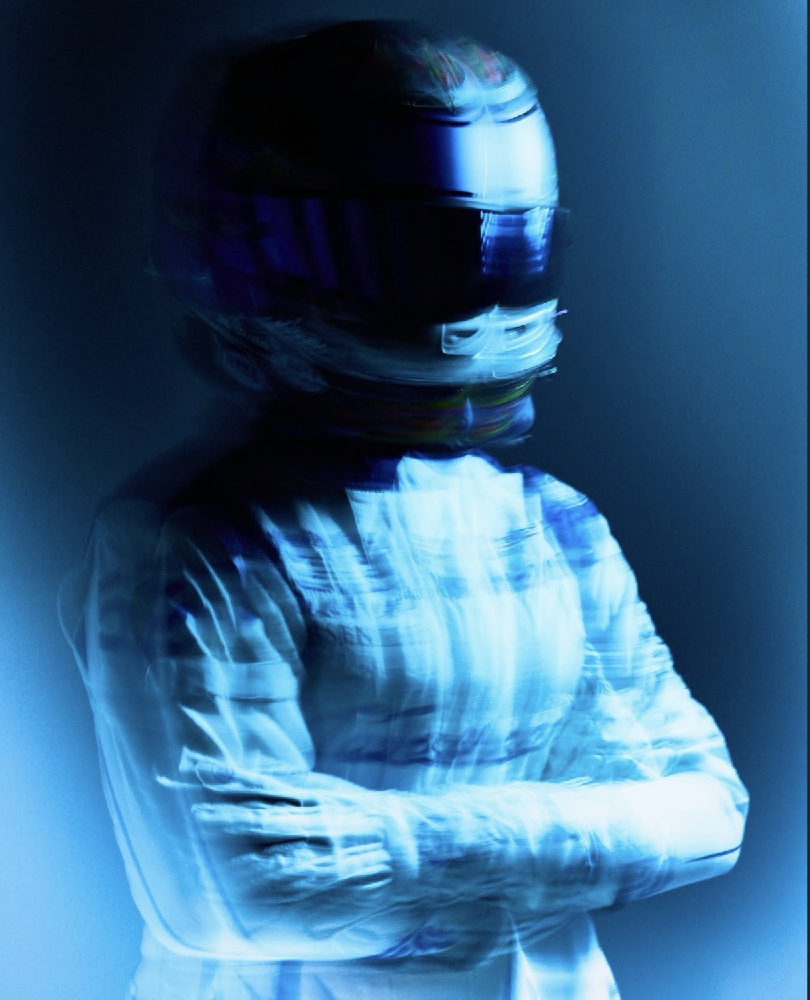
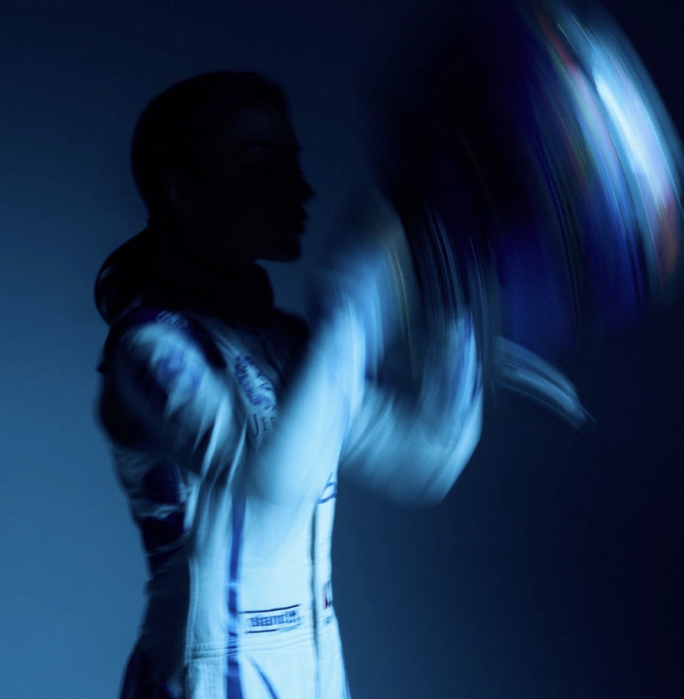
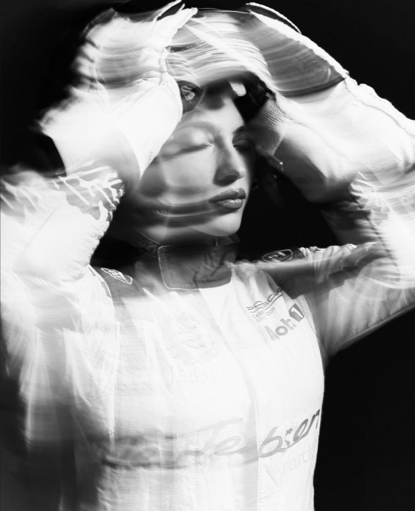
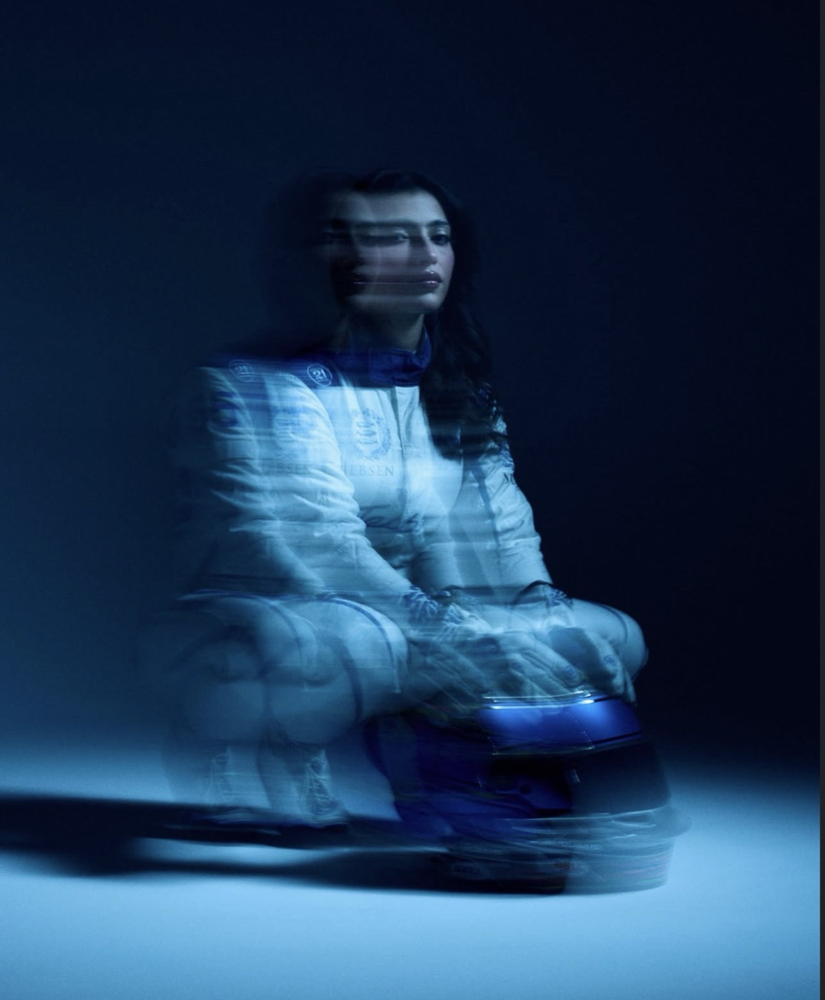
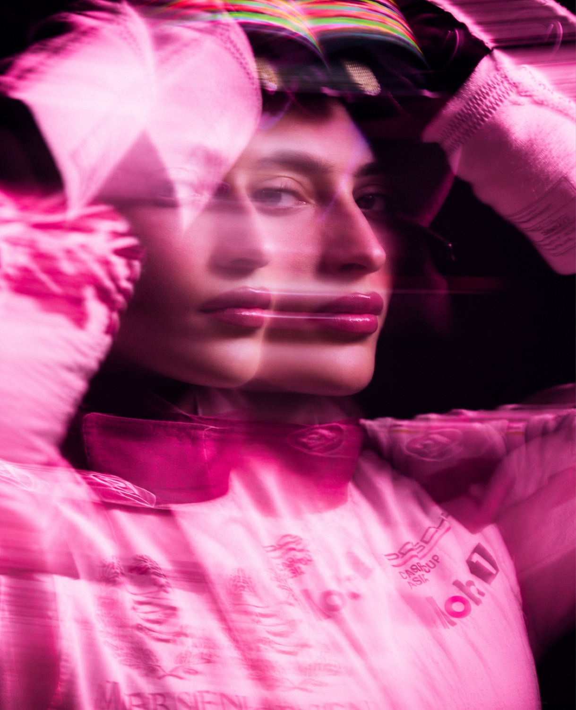
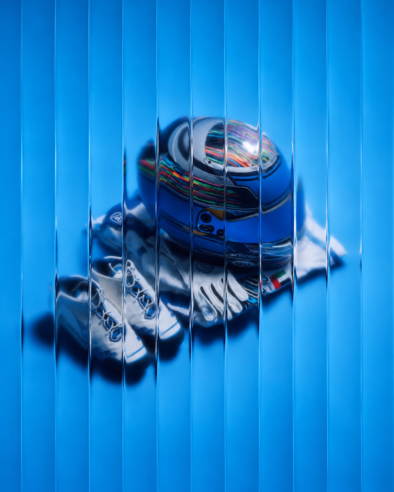

Lap CoPilot started with a simple problem: a driver with a folder of lap data and no way to open it on the laptop in front of them. The standard analysis tools were built for race engineers, on engineers' computers, in engineers' language.
first
A viewer that opens the files a data logger records: the lap table, the speed and pedal traces, the track map and the onboard video, all moving together.
then
Every common logger and sim format, so it no longer matters which box is in the car. And the lap itself rebuilt in 3D, with a second car to race against.
now
A coach that reads each corner and says, in a sentence, where the time went and what to try next lap.
starman
The face of that coach. A star cut out of a solid tile, so whatever is behind it shows through: something to steer by when the session is over and the data is all you have.
show every driver where the time is, and what to try next.
Not more data. Most drivers already have more than they can read. The job is to turn a session into two or three things worth trying on the next run.
an engineer beside every driver.
A driver in a club series, a kart paddock or a sim rig should come off track and understand their laps in minutes, on their own laptop, without a data engineer and without sending their data anywhere.
Four values. Each one is already visible in how the product behaves today.
plain
Say it the way a driver would on the radio. “You brake later here” before “longitudinal deceleration onset”.
specific
A corner, a number and a direction. “0.3 s on exit at Turn 5” is useful. “Work on your exits” is not.
honest
If there is nothing to gain in a corner, say so. If a value is estimated rather than measured, label it.
yours
It runs on the driver's own computer, from their own files, and works offline. The data belongs to the person who drove it.
Starman talks like a good race engineer: calm, short, on your side. It speaks to the driver as “you”, leads with the number, and never gives more than one instruction at a time.
“Through Turn 5 you are 0.32 s quicker than the reference. Keep it and spend the effort elsewhere.”
“Flat-out section — no braking here, so nothing to gain from the pedal.”
“Nothing stands out to change — you are dialled in here. Keep it consistent.”
“Amazing lap! 🔥 You crushed it!”
“Suboptimal brake pressure modulation detected in the corner entry phase.”
“Error: invalid input.”
- You
- Always second person. “You are 0.3 s quicker”, never “the driver” or “the user”.
- Number first
- Lead with the figure and where it happened, then what to do about it. One instruction per sentence.
- Calm
- No exclamation marks, no hype, no emoji. A quicker lap is stated as a fact; so is a slower one.
- Driver's words
- Brake, turn in, apex, exit, lift, flat. Engineering terms only where the driver would use them too: delta, sector, reference lap, ideal lap.
- When it goes wrong
- Say what happened, why, and what to do next, in full sentences: “This looks like a pit-lane or paddock recording, not laps on track.” Never a code or a bare “failed”.
- Waiting
- One verb and dots beside the orb: “Loading....”, “Making the replay....”. No percentages unless they are real.
- Names
- The product is written Lap CoPilot, two words, capital C and P. Files are “lap data files”, not “VBO files”; the format is a detail, not the name of the thing.
- Starman itself
- The mark does not speak in speech bubbles, crack jokes or cheer. Its character is in its shape; the words stay with the engineer's voice.
the lap analysis tool that answers in driver language.
For drivers and driver coaches who have data but no data engineer. Lap CoPilot opens the files their logger or sim already records, replays the lap in 3D beside a reference, and tells them corner by corner where the time is.
- For
- Club and GT drivers, karters and sim racers, and the coaches who work with them. People who drive first and analyse second.
- Instead of
- Professional telemetry software, which assumes an engineer is reading it; and lap timers, which say how fast but not why.
- What sets it apart
- Three things in one place: every common logger and sim format, the lap rebuilt in 3D with a ghost car, and a coach that reads each corner.
- Proof
- It reads Racelogic, MoTeC, Bosch, Cosworth, Alfano and Unipro files, plus iRacing and Le Mans Ultimate. It compares up to four laps in the 3D replay. It runs offline.
- Not
- A setup tool for engineers, a live timing service, or a social network for lap times.
Starman is the face of the brand: a wide tile with a sharp star cut out of it. The star is the empty space, not the shape. It works alone wherever space is tight, such as favicons, app icons and profile pictures.
SunYellow with glow · dark backgrounds
- Form
- A wide tile, about one and a half times as wide as it is tall, with a star taken out of its bottom edge. The star is never drawn or filled: it is the opening, and whatever is behind the mark shows through it.
- Sun
- The same shape in sun yellow, for dark backgrounds where the blue would sink into the background. Always with its soft yellow glow around it; never shown flat. Not for light backgrounds: yellow on a light background is too faint.
- Minimum size
- 16px wide. Below that the star closes up.
- Colour
- The blue gradient: ultramarine at the top, electric blue through the middle, sky blue at the bottom edge.
Starman in one colour: the same tile and cut-out star, flat, without the gradient or the glow. There is one version: white.
WhiteStar cut out of the tile
- Shape
- The exact outline of the colour mark, with hard edges. No blur, glow or shadow is ever added back.
- Star
- The star is cut out of the tile, so the background shows through. It is never filled in with a second colour.
- Colour
- White only, on a dark background. There is no black or dark version. Never a gradient, tint or brand colour.
- Use when
- Only one colour is available and the background is dark: one-colour print on dark stock, embossing, or on top of dark photography.
- Minimum size
- 16px wide. Below that the star closes up.
The name set in Anxler Regular, all lowercase, tracked tight. The round a's and the open s do the work, so nothing else is added to the primary version.
ExplorationsNot approved — pick or discard
A · Two-tone
B · Light on sun
- Typeface
- Anxler Regular 400, lowercase, −3% tracking. Do not retype it; use the supplied artwork.
- Minimum size
- 72px wide on screen.
- Use when
- The mark already appears nearby, or the layout is purely typographic.
The name breaks naturally into two four-letter and three-letter halves. Stacked, it fills square and vertical formats without shrinking.
man
man
- Alignment
- Left-aligned, both lines sharing one edge. Never centred.
- Leading
- 66% of the type size. The lines sit tight, with a gap about the width of a letter stroke between the two words.
- Use when
- Square or portrait formats: social tiles, packaging faces, posters.
Mark and wordmark side by side. This is the primary logo and the default choice whenever there is room.
One colourWhite only
SunYellow with glow · dark backgrounds
CompactMark the same height as the letters
- Compact
- The mark is exactly as tall as the letters: its top edge meets the top of the t and its bottom edge meets the bottom of the s. Use it in running lines, navigation bars and anywhere the standard lockup feels top-heavy.
- Sun
- The yellow mark, always with its glow, with an off-white wordmark. For dark backgrounds, and the only lockup allowed on the night gradient.
- One colour
- White only, on a dark background. The flat white mark with a white wordmark. On light backgrounds use the colour mark.
- Proportion
- Standard: the mark is as tall as the wordmark's type size, centred on it. Compact: the mark matches the letter height.
- Gap
- Standard: just under a quarter of the type size. Compact: a sixth. Never moved closer or further apart.
- Minimum size
- 24px tall on screen.
Every version of the logo keeps a margin free of text, images and edges. The margin is x, which equals half the height of the mark.
- x
- Half the height of the mark, measured on all four sides.
- Applies to
- Other logos, text, photography edges and the edge of the page or screen.
- Mark alone
- A quarter of its own width on every side.
The wordmark is only ever ink, white, or sun yellow on night. The mark is blue on light backgrounds and on flat ink, sun yellow with its glow on dark and night backgrounds, and white for one colour. It is never recoloured beyond these three.
Ink on whitePrimary
White on inkReversed
White on nightWordmark only
Sun on nightYellow mark with glow
Sun on nightWordmark only
Night on sunWordmark only
Ink on mistSecondary
- On night
- Use the wordmark alone or with the sun mark. Never the blue mark: it disappears against the night gradient.
- On photography
- The compact lockup or the mark alone, in a corner: sun mark on dark areas, white mark on pink or bright images. The full rules are under Photography, Logo on Images.
- Never
- Recolour the mark, set the wordmark in any other colour, or add shadows and outlines.
- Tones
- Night and sun are defined in the Color chapter. The logo uses those values and no others.
Starman lives at night. Almost everything is void black, so the few things with colour read as light sources: the yellow mark, one electric blue action, and white for whatever is selected.
ProportionVoid 60 · Carbon 18 · Moon 12 · Electric 6 · Sun 2 · Nova 2
Supporting tonesGradient stops and light surfaces
- Void first
- Dark is the default. Light surfaces (moon, mist) are for pills, selected states and the occasional light page, never for a whole product screen.
- One accent
- Electric appears once per screen, on the main action. The selected item is white, not blue. If two things are blue, one of them is wrong.
- Sun
- Belongs to Starman. Apart from the mark and the wordmark on night, use it only as a tiny status dot. Never as a button, a background or body text.
- Nova
- A second voice for one highlighted card or moment. It never sits next to electric at the same size, and never carries an action.
- Blue text
- Electric is too dark to read as text on void (3.3 : 1). Links and blue text use sky.
- Copy
- Select any swatch to copy its hex value.
Gradients are where the light comes from. Each one has a single bright edge and falls away into darkness, like a sky rather than a rainbow. There are four, and they are never mixed.
Avatar field, hero backgrounds
Feature cards and panels
One highlight card per layout
The sun mark's fill; rare full-bleed moments
- Night
- Always top to bottom: abyss, ultramarine at 62%, sky at the lower edge. This is the field behind the avatar. Never flipped, rotated or recoloured.
- Deep
- Electric at the top edge falling to abyss. Text sits in the bright upper half or the dark lower half, not across the transition.
- Nova
- Dark in the centre, bright at the rim, so content in the middle stays readable.
- Stops
- Only the stops shown. No extra colours, no gradient between electric and nova, no gradients on text.
- One per view
- A screen shows night or deep, and at most one nova card. Everything else is flat void and carbon.
Three effects, each with one job. Glow says “this is Starman”. Haze gives a background depth without a photograph. Glass lets a panel float on haze and stay readable.
Glass on haze, with the glowing mark. All three effects in one place.
GlowThe sun mark only
GlassOnly on haze or a gradient
HazeBlur 48 · grain 28%
- Glow
- Two soft sun-yellow halos that follow the mark's outline: a tight one at 3.5% of the mark's width and a wide one at 11%. Nothing else in the system glows. No glowing buttons, text or borders.
- Haze
- Three or four soft fields of electric, ultra and sky on abyss, blurred until no edge is left, with fine grain over the top. A warm version adds nova. It stands in for photography and sits behind glass.
- Glass
- White at 10% opacity, a 24px background blur, a 1px white edge at 20% and an 18px radius. Use it for floating panels and bars on haze, gradients or imagery.
- Not on flat
- Glass on void or carbon is just a grey box. On flat backgrounds use a carbon panel instead.
- Fluted glass
- A fourth effect, for images only: the picture sliced by vertical ribs. It is described under Photography.
- Shadows
- One soft, dark shadow under glass to lift it. No coloured shadows and no shadows on flat cards.
- Corners
- 28px for cards and stages, 18px for glass and inner panels, fully round for pills and tabs.
These are the text and background pairs that are allowed, with their contrast ratio. Body text needs 4.5 : 1 or more; large headlines need 3 : 1.
The default. Headlines and body text.
Secondary text, captions and labels.
Text inside panels and cards.
The main action and its label.
Pills, selected tabs and light pages.
Links and blue text.
The wordmark and status dots only.
Text on the highlight card.
Light stages behind the logo.
What to avoid
Use sky for blue text.
Sun is for dark backgrounds only.
Keep the accents apart.
One electric action per screen.
Starman photography is people in motion, caught in the dark. A driver in their kit, one cold light, and a shutter left open long enough for movement to draw itself across the frame.




Style referenceNot Starman photography · replace with our own shoot
- Subject
- One person, in race suit or helmet, against a plain dark backdrop. No cars, pit lanes or crowds; the kit already says where we are.
- Mood
- Quiet and concentrated, the moment before or after the lap. Eyes closed, looking away or hidden behind a visor. Never posed smiles to camera.
- Framing
- Close: head and shoulders to three-quarter length. Portrait 4:5 as standard, square for social, wide only for banners.
- Status
- The images in this chapter set the style. They are references from another shoot and show other brands, so they must not be published as Starman's.
The blur is made in the camera, not added afterwards. The subject moves during a long exposure, so part of them stays readable and the rest trails behind.
Still body, moving headThe face repeats
Still body, moving objectThe helmet becomes an arc
- One anchor
- Something in every frame stays sharp enough to read: a visor, a profile, a pair of hands. Without it the picture is just a smear.
- Direction
- Streaks follow one movement, a turn of the head or a swing of the arm. Avoid camera shake, which blurs everything equally.
- Ghosting
- Two or three overlapping positions of the same person are welcome. More than that and the figure dissolves.
- In camera
- Long exposure with a flash or a held pause for the sharp layer. No motion-blur filters, and no generated blur over a sharp photo.
Every image is graded to one colour: cold blue, hot pink, or black and white. The white race suit does the job the sun mark does on a dark page: it is the brightest thing in the dark, and it takes on whichever colour the light is.
Blue gradeApproximate tones sampled from the references
Pink gradeApproximate tones sampled from the reference
Blue gradeThe default

PinkPink gradeThe accent
Black and whiteEditorial and print
- Blue grade
- Shadows fall to near-black navy, mid-tones sit in steel blue, highlights lift to ice and almost white. Skin takes the same blue; nothing stays warm. Most images are blue.
- Pink grade
- Shadows fall to black with a wine tint, mid-tones sit in rose, highlights lift to blush. It is the photographic side of nova, and follows the same rule: the rare second voice. About one image in five, and never two side by side.
- Black and white
- High contrast, true black background, white suit close to clipping. Use it where a colour grade would fight another colour, or in a set to give the eye a rest.
- Light
- One soft source from the side or above, falling off quickly into darkness. The backdrop is plain and darkest at the edges.
- One per image
- An image is blue, pink or mono, never a blend. No blue-to-pink gradients across a photograph and no split lighting.
- Other colour
- Only what the kit brings by accident, such as a flash of colour in a visor. Never sun yellow in a photograph: that belongs to the mark.
- With the palette
- The blue grade is cooler and greyer than electric, on purpose, so one electric button still stands out on top of a photo. On a pink image, controls are white or glass; an electric button on pink is the electric-on-nova clash the Color chapter rules out.
The second photographic style: the subject seen through ribbed glass. Each rib bends the picture a little differently, so the image breaks into vertical slices that almost line up. Motion blur is for people; fluted glass is for kit and objects.

In cameraStyle referenceShot through real glass
On screen12 ribs, built in the browser
- Use for
- Still life: a helmet, gloves, boots, a steering wheel. Also for backgrounds and section openers where a portrait would be too much.
- Ribs
- Always vertical and evenly spaced, 10 to 14 across the frame. The subject sits in the middle third so the ribs cut through it; the outer ribs show plain colour.
- Colour
- The one place the blue goes bright: a clear, saturated blue ground instead of darkness, with white kit on top. Small flashes of colour from the object itself are fine.
- Light
- Soft and even, with a thin highlight down the edge of each rib. Sharp focus on the subject; the glass does the distorting, not blur.
- In camera
- For photography, shoot through real fluted glass. The browser version is for treating an existing image on screen, or for backgrounds behind glass panels.
- Not together
- One style per image. Never fluted glass over a motion-blur portrait in a finished photograph; the on-screen example above only shows how the effect is built.
On a photograph the logo is a signature, not a headline. It sits straight on the image in one corner, small, with nothing behind it: no box, no glass, no panel.
Compact lockup, bottom leftMark as tall as the letters · margin equal to the mark
LockupDark corner
Mark aloneSets and series
White markPink images, on a fade
White lockupBright images
Where it goesOne of four corners
✕ Not like thisBoxed, centred, oversized mark
- Version
- The compact lockup, where the mark is exactly as tall as the letters, or the mark alone. The standard lockup with the larger mark is for pages and packaging, not for images.
- Size
- Lockup: about a quarter of the image width on a portrait or square image, a sixth on a wide one. Mark alone: about a tenth of the image width. On screen never below 16px wide for the mark.
- Position
- One of the four corners, whichever is calmest. Never centred, never over a face or the sharp part of the image.
- Margin
- The same distance from both edges: roughly the height of the mark in a lockup, and never less than 4% of the image width.
- Sun mark
- Only on a dark part of the image, where its glow can read. The glow is part of the mark and scales with it; nothing else is added.
- White mark
- On pink images, bright blue images and anywhere the corner is not dark, use the white one-colour mark and a white wordmark. Yellow on pink or on bright blue fights the picture.
- Nothing behind it
- No box, glass panel, pill or outline behind the logo. If no corner is dark or calm enough, a soft fade rising from the bottom edge is allowed, in the darkest tone of that image: navy on blue, wine-black on pink.
- Once
- One logo per image. In a set or carousel, the full lockup goes on the first image and the mark alone on the rest.
Photographs sit behind the interface, not beside it. Text and controls go on glass or in white pills, placed over the calm, dark part of the frame.
Text sits on glass over the dark part of the photograph.
Photo, pill, glass panel and logoEach in its own corner
- Placement
- Panels sit over shadow or backdrop, never across a face or the sharp anchor of the image.
- Text
- Body text is never set straight onto a photograph. Use a glass panel, a carbon panel or a white pill. A short white headline may sit directly on a dark area.
- Logo
- Follows Logo on Images: in a corner of its own, straight on the photo, never inside the glass panel.
- Corners
- Photographs take the 28px card radius, or run full bleed. No circles, cut-outs or drop shadows.
- No photo yet
- Use haze from the Color chapter. It is built from the same idea: blurred blue light on a dark ground.
- Never
- Daylight, frozen action shots, full-colour images, busy locations, stock photography or AI-generated people.
The avatar is Starman used as a profile picture: the small image that stands for the brand on social accounts, in chat, in app stores and next to its messages. It is the version of the brand people see most often, and usually the smallest.
- Always Starman
- The avatar is the mark, never the wordmark or a lockup. Text is unreadable at avatar size.
- One avatar
- Every account uses the same image, so the brand is recognised across platforms.
- Level
- The mark sits level and centred, in sun yellow on the night field. Never tilted, rotated or flipped.
Platforms crop avatars to a circle or a rounded square. Starman is placed so that nothing important is lost in either.
CircleMost platforms
Rounded squareApp icons
Safe zoneDashed circle
- Safe zone
- The whole mark, including its glow, stays inside a circle 85% the width of the image.
- Fill
- The night background runs to every edge. No borders, rings or white corners.
- Upload
- Always upload the square master and let the platform crop it. Never upload a pre-cut circle.
The avatar has to survive at the size of a fingertip. Below 24px the glow blurs into the background, so the mono mark takes over.
- Master file
- 1024 × 1024px PNG. Platforms scale it down themselves.
- Minimum
- 24px for the full-colour avatar. Use the one-colour mark below that.
- Never enlarge
- Do not scale a small export up. Always start from the master.
When colour is not available, the avatar is the white one-colour mark on black. Same shape, no gradient, no glow.
White on black
- Size in frame
- The mark fills 62% of the avatar's width and is centred, so its corners stay inside a circular crop.
- Background
- Flat black only.
- Never
- Use a greyscale copy of the colour avatar. Always use this drawing.
Starman is one fixed shape. Changing how it looks changes who it is.
Starman always sits level.
Starman is always yellow on night.
The whole mark is always visible.
Scale in proportion only.
For one colour, use the mono mark.
No rings, frames, flags or seasonal extras.
The name sits beside the avatar, never on it.
No faces, accessories or props.
Anxler carries the brand's character. Its round, open letterforms are distinctive enough to be recognised in a single word, so it is used sparingly: headlines and the wordmark, nothing else.
0123456789
- Case
- Always lowercase, including the first word and proper names in a headline.
- Weight
- Regular 400 is the default. Light 300 is allowed only at 56px and above, where the thin strokes still hold.
- Tracking
- −2% at 40px and above, −1% below. Never add positive tracking.
- Size
- 24px minimum. Below that, the headline is set in the body font instead.
- Length
- Eight words or fewer, two lines at most. Longer thoughts belong in body copy.
- Not used
- ExtraBold and the Rounded cuts are not part of the system.
Hanken Grotesk does the reading work. It is a quiet, slightly warm grotesque with a two-storey “a” and plain terminals, so it steps back and lets Anxler be the only voice with personality.
abcdefghijklmnopqrstuvwxyz
0123456789 & @ € % ? !
- Case
- Sentence case. The lowercase rule applies to Anxler only.
- Weight
- Regular 400 for text. Medium 500 for emphasis, buttons and navigation. Light 300 only for intro text at 20px and above. Nothing heavier than 500.
- Size
- 16px for body, 14px for captions and notes, 20px for an intro paragraph. Never below 13px.
- Measure
- 55 to 75 characters per line. Narrow the column before shrinking the type.
- Alignment
- Left-aligned, ragged right. Centre only three lines or fewer. Never justify.
- Emphasis
- Use Medium 500, not italics, underlines or colour.
IBM Plex Mono is for labels. Small, uppercase and widely spaced, it reads as a precise, factual marker and contrasts with the soft lowercase headlines above it.
0123456789 : / — · # %
- Case
- Always uppercase.
- Weight
- Medium 500 at 11–12px. Regular 400 at 13px and above.
- Tracking
- +14%. Uppercase mono needs the air to stay legible at small sizes.
- Size
- 11px as standard, 13px maximum. A label is never the largest thing on the page.
- Use for
- Section labels, chapter numbers, dates, captions, data values and specifications.
- Length
- One line, five words or fewer. Never full sentences.
The bigger the type, the tighter the lines. Large headlines sit almost solid; small text needs room. The ruled lines below mark each line of text.
tight and solid
a headline that runs onto a second line
An intro paragraph bridges the headline and the body beneath it.
Body copy gets the most room, so the eye can travel back to the start of the next line without losing its place.
Label one
Label two
Label three
- Principle
- Line height falls as size rises: 155% for body down to 100% for display.
- Paragraph gap
- One full line of body text (25px at 16px) between paragraphs. No first-line indents.
- Headline to body
- Space above a headline is at least twice the space below it, so the headline belongs to the text it introduces.
- Label to headline
- 8–12px. They read as one unit.
Seven sizes, no others. Each step is clearly larger than the one below it, so hierarchy comes from size and typeface rather than from heavy weights.
One expressive typeface, one quiet one, and a small label to keep things in order.
Every layout uses the same three roles in the same order. The reader learns the pattern once and then stops noticing it, which is exactly the point.
- Headline to body
- A headline is at least 1.75× the size of the text directly beneath it. Any less and the two compete.
- Per layout
- Three sizes at most on a single screen or page, plus the label.
- Small screens
- Display drops to 44px and Headline 1 to 34px. Body, small and label sizes do not change.
- Hierarchy
- Change size or typeface to signal importance, never weight above 500.
Each of these breaks the calm, consistent voice the system is built to protect.
Anxler is always lowercase.
Nothing above 500. ExtraBold shouts.
Below 24px, use Hanken Grotesk.
Headlines are tracked tight, never open.
Left-align anything over three lines.
Three typefaces. No serifs, scripts or italics.
Five words or fewer, one line.
Never distort, outline or add effects.
A set drawn for racing: laps, sectors, traces and kit instead of generic app symbols. The drawing follows the conventions people already know from their phone: an even, fine line, simple geometric shapes, and a solid version of each icon for the selected state.
24 icons · select one to copy its SVGFiles in assets/icons
All icons are drawn on the same 24-unit grid with the same line, so any two sit comfortably side by side.
Outline1.5 line
FilledDetails cut out
- Grid
- 24 × 24 units. The drawing stays inside the dashed 20-unit area. Round icons are 17.5 units across; boxy ones are slightly smaller so they look the same size.
- Line
- 1.5 units wide, with round ends and round corners.
- Shapes
- Built from circles, straight lines and generous corner radii. One clear object per icon, seen flat from the side, front or above.
- Two layers
- Main lines at full strength; supporting detail, like a tread, a baseline or the other two sectors, at 45%. It gives depth without adding weight.
- Filled version
- The body of the icon becomes solid and its inner details are cut out of it. Icons made only of open lines, such as telemetry or gears, have no filled version and stay as they are.
- New icons
- Add the drawing to
tools/build_icons.pyand run it. The outline, the filled version, the files and this chapter are all generated from that one description.
Icons take the colour of the text beside them. Outline is the resting state; filled means selected.
Outline, moonDefault
Filled, void on moonSelected
Outline, hazeInactive
Sun dotLive right now
- Sizes
- 24px as standard, 20px beside small text, 32 and 48px for empty states and headers. 16px is the minimum.
- Line weight
- The line stays close to 1.5px on screen: slightly lighter in the drawing at 48px, slightly heavier at 20 and 16px.
- Outline or filled
- Outline everywhere by default. Filled only for the selected item in navigation and for the icon on the one electric button.
- Colour
- Moon by default, haze when inactive, void on a white pill when selected, white on electric. Never a gradient and never nova.
- Sun dot
- The centre of the live icon may turn sun yellow while a session is running. This is the tiny status dot the Color chapter allows, and the only colour inside an icon.
- With text
- Icon to the left, 10 to 14px gap, centred on the text. An icon without a label needs a tooltip or an accessible name.
The same three patterns as the rest of the system: a pill of round buttons for navigation, quiet rows for data, and one blue action.
Navigation pillSelected item filled
Data rows24px outline, label, value
White pill20px icon with a label
The set only works if every icon looks drawn by the same hand.
Keep 1.5. No bold or hairline versions.
Ends and corners are always round.
Use the supplied filled file; it keeps the details.
Icons follow the text colour.
Filled means selected. One per group.
No emoji, stock icons or other libraries beside these.
The dashboard is the first thing a driver sees after loading a session in Lap CoPilot: the best lap, how much time is still available, where it was lost, and the replay. Four cards, one rail of round buttons, a single blue action. It should be readable at arm's length in a garage.
Ideal lap
Insights
against the reference lap3D replay
Session overview, proposedExample figures · reference photo
- Photo card
- The onboard video of the reference lap, with the best lap time on glass. Until there is video, a photograph in fluted glass.
- Nova card
- The ideal lap, built from the driver's best sectors, and the time still available. One dot per lap in the session.
- Carbon card
- Insights: the corners where time was lost or gained against the reference, with the product's own verdicts.
- Deep card
- The 3D replay, with the gap between the cars. It shows an orb while the replay is being made.
- Rail
- Settings at the top. In the white pill: Starman, playback speed, and mark event. In the carbon pill: new analysis in blue, then laps, graph, video, map and coach.
- Scrubber
- Steps through the laps; in playback it becomes the timeline.
Five more screens on the same grid, rail and scrubber. The wording, the lap table, the corner names, the file formats, the cameras and the reports are taken from Lap CoPilot as it works today, so these show the real product in the new design.
New AnalysisThe product's start page
Add lap data files, then tick up to 4 laps. The first one is the reference lap; the 3D Animation puts one car on each ticked lap.
VBOX0013
Brands Hatch Indy · 18 lapsOne deep card, one carbon cardThe blue action is “Analyse”
LapsThe lap table, ideal lap and sectors
Laps
Brands Hatch Indy · VBOX0013Ideal lap
Sectors
reference lap 18, and what the ideal lap takes offFigures from the product's sample sessionWhite tick = reference · blue tick = compared
CornerAI Insights for one corner
Paddock Hill Bend
Turn 1Loss in brakingThings to try
Lap 17 against lap 18- You are braking 10 m too early. Take it 5 m later next lap and keep the entry speed.
- Try a later apex to carry more speed — aim for about 46 mph through the middle.
- Heavy-braking corner — hit the same brake marker every lap.
Where it goes
Lap 18 (ref)Lap 17You are braking 10 m too early. Brake 5 m later and keep the entry speed.
Try: brake 5 m later — you are 10 m early now
Apex 43.6 mph, 2.1 mph slower than the reference.
Try: carry ~2.1 mph more at the apex
Full power matches the reference — strong exit.
Try: squeeze a touch earlier
Your steering is smooth and close to the reference (2 corrections, 1.1× the reference rate).
Try: keep the clean inputs
Sentences as the product writes themExample figures
3D AnimationThe replay, the cars and the onboard video
3D Animation
Brands Hatch Indy · Follow Car 1Cars
one on each ticked lap, up to fourTrack outline from the product · cameras by their real namesPhoto is a reference
Coach and ReportsChat, the five reports and Mark event
Coach Chat
Built-in offline coachReports
saved as PDFMark event
Chat answers in the product's own formatThe blue action is “Send”
- From the product
- Screen names, button labels, the start page text, the list of file formats, the lap table columns, verdicts, coaching sentences, camera names, report names and the Mark event wording are Lap CoPilot's own. The lap table is its sample session at Brands Hatch Indy, with the circuit's real corner names.
- Still examples
- The figures on the Corner, 3D Animation and Coach screens (metres, speeds, the marked event) are made up to fit that session. The photograph is a style reference.
- Spanning cards
- When a screen has one main job, such as a table or a chat, that card takes a whole column. The screen then has two or three cards, never more than four.
- Lap colours
- White for the reference lap and sky blue for the compared lap on these screens. In the product the user picks each lap's colour; the defaults are in Telemetry, Colours.
- Blue action
- One per screen. Where a screen has its own next step, such as Analyse or Send, the new analysis button in the rail goes quiet.
Three layers, always in the same places, so the screen can change completely without anyone getting lost.
- Cards
- A grid of two columns and two rows on a laptop or tablet, one column on a phone. Cards fill their cell completely; there are no small widgets floating in empty space.
- Rail
- One narrow column of round buttons on the right edge: settings at the top, the session pill in white, navigation in a carbon pill at the bottom. On a phone the rail turns into a row at the top.
- Scrubber
- A single glass bar floating over the bottom of the cards, for moving through laps and through time. It is the only thing allowed to overlap the cards.
- Spacing
- 12px between cards and around the screen. Inside a card, 24 to 28px from the edge to the content. Related items sit 8px apart; unrelated groups 24px.
- Corners
- Cards 28px or more, growing with the screen. Panels inside cards 18px. Buttons, pills and the scrubber fully round.
- Density
- Four cards on the overview at most. The working views behind it, such as the graph and the lap table, are denser by nature. The graph has its own chapter, Telemetry.
Four kinds of card. Each has one job, and a screen uses each kind at most once.
Photo cardVideo and the driver
Ideal lap
Nova cardThe one number that matters
Insights
against the reference lapCarbon cardLists and detail
3D replay
Deep cardThe replay and what comes next
- Photo card
- Onboard video or a photograph, with glass panels on top: one figure in a chip, one line of context in a bar. It sets the scene and holds the least data.
- Nova card
- The highlight. One large figure in Anxler, one small visual such as the dot grid, and nothing else. Pink is rare, so this card is where the eye goes first.
- Deep card
- The 3D replay, a target or a countdown. Lit from above, with a dotted ring or orb as the only decoration.
- Carbon card
- Everything else: rows with a round icon, a name, a verdict tag and a value. Rows are separated by hairlines, not boxes.
- Verdict tags
- The product's own words in a small pill: Loss in braking, Loss at apex, Loss on exit, Even, Ahead. Ahead is the white pill; the rest are graphite.
- Big figures
- Anxler, 40px and up, with the unit or label small beneath it. One or two per card.
- Dot grid
- Rows of small dots, solid or hollow, for anything countable: laps, sessions, days. It replaces a bar chart wherever a count is enough.
Lap CoPilot already works. This is every part of the product as it exists today, and how far the new design has reached. Six screens have a first drawing, under Overview and More Overviews.
Waiting moments in the productEach gets a thinking orb
- Lap colours
- Set in Telemetry, Colours: the user picks each lap's colour, with eight bright defaults starting green, red, white, blue. Still open: how slower and faster are marked in the lap table, where the product uses red and green today.
- Open: light theme
- The product has a light and a dark theme. This hub defines dark only.
- Open: dense views
- The lap table and graph run at 12px in the product. The type scale here stops at 14px, so a compact size for data needs adding.
- Open: icons
- Still to draw for the product: 3D replay, reports, play, pause and stop, export and share, measure, maths channels, open file.
How the dashboard behaves matters as much as how it looks. These rules hold on every screen.
- One question per card
- If you cannot say what a card answers in five words (“where did I lose time?”), split it or cut it.
- One blue action
- The electric button is the single most likely next step: on the overview, starting a new analysis. Everything else is white, carbon or glass.
- Selected is white
- The current view in the rail is a white circle with a filled icon. Blue never means “you are here”.
- Reference lap
- Everything is measured against one reference lap, and the screen always says which. If none is chosen, the card says so and offers to pick one.
- Waiting
- Anything that takes longer than a second shows a thinking orb and a verb, inside the card that is waiting. Never a full-screen spinner, and never an empty card.
- Gains and losses
- Always shown with a plus or minus sign and the number, so they read without colour. Whether they are also coloured is part of the open lap-colour decision.
- Touch and mouse
- The product runs on Windows laptops and on a tablet. Round buttons are at least 44px, and everything reachable by touch is reachable by keyboard.
- Motion
- Cards do not animate in. Movement is kept for things that are really moving: the orb, the scrubber, the replay, a value updating.
- Empty
- A card with no data yet says what will appear and what to do first, in one sentence, with the action beneath it: “Add lap data files to see your laps.”
The graph is where drivers and engineers read the lap, so it stays an instrument. Thin, exact lines on a quiet grid, nothing decorative, and nothing that changes what the data says. Everything the brand adds elsewhere, such as glow, glass, gradients and motion, stops at the edge of this view.
Live example · move over the graph, change a lap's colourSimulated laps, not real data
- Same as the app
- Stacked channels on one shared distance axis, sector bar on top, values for the cursor position in the corner of each channel. This layout is kept as it is in the product; the hub only fixes its colours, line weights and type.
- Clear first
- If a change makes the graph prettier but a trace harder to follow, it is wrong. No effect is ever added to a line.
- The user's colours
- Each lap has one colour on every channel, and the user chooses it. The defaults below are a starting point, not a rule.
A trace is every sample, joined by straight segments, in a hairline. High-frequency detail such as steering corrections and throttle stabs is the information; smoothing it away or thickening the line hides it.
1px, straight segments, no fill.
The corrections are gone and the laps merge.
Glow belongs to the mark, never to data.
Fills cover the lap behind and add nothing.
- Weight
- 1px on screen, the same for every lap and every channel. 1.5px only in exports that will be scaled down, such as a PDF report. No lap is made bolder to mark it as the reference.
- Samples
- Every logged sample is drawn. When there are more samples than pixels, keep the lowest and highest value in each pixel column so spikes survive; never average.
- Joins
- Straight segments between samples. No curves, splines or rounding. Stepped channels such as gear are drawn as steps.
- Nothing added
- No glow, shadow, gradient stroke, area fill, dots on samples or animation on the line. Solid lines only; dashes are kept for a single computed line such as the ideal lap.
- Overlap
- Laps are drawn in the order they were added, the newest on top. Where two laps match, the top one covers the other; that is expected and tells the reader they are equal.
- Density
- Up to four laps in one graph stay readable. Beyond that the app lets the user hide laps rather than thinning the lines.
The user picks the colour of each lap. The defaults are bright and saturated so a 1px line holds on carbon, and tuned to sit beside electric blue and nova. Green, red, white and blue come first, because that is how people already read lap data.
- Default order
- First lap green, second red, third white, fourth blue. Cyan, pink, amber and violet follow for a fifth to eighth lap.
- Free choice
- Any lap can be set to any default or to a custom colour, and the choice is remembered for that lap everywhere it appears: graph, lap table, map and 3D replay.
- One lap, one colour
- A lap keeps its colour on every channel. Channels are told apart by their position and title, never by colour.
- No fixed meaning
- Because the user chooses, green does not mean faster and red does not mean slower inside the graph. Gain and loss are shown by the sign and the number on the delta channel.
- Custom colours
- If a chosen colour is too dark to read on carbon, the app lightens it for the line and keeps the user's choice in the legend swatch.
- Kept apart
- Sun yellow is not a default: it belongs to Starman. Electric blue stays for actions and selection, so the data blue is a lighter, cooler tone.
Everything around the traces is quieter than the traces. Grid, axes and labels use the hub's neutrals and typefaces, at the smallest sizes that still read.
- Background
- Carbon, flat. No gradient, haze, photograph or glass behind a graph.
- Grid
- 1px lines in white at 7%. The zero line of a channel and the line between channels at 16%. No more than six horizontal lines per channel.
- Channel title
- Hanken Grotesk 12px in moon, top left inside the channel. The plain name first, the logged name after it in brackets: Throttle (ecu_aps).
- Numbers
- IBM Plex Mono 11px, so digits line up: axis values in haze, cursor values in moon. Units follow the value in the legend, not on every tick.
- Legend
- Top right of each channel: one small square in the lap's colour and the value at the cursor. No lap names here; they live in the lap bar above.
- Cursor
- One vertical hairline in white at 45% across all channels. No tooltip box, no dots on the lines; the values update in the legends.
- Sector bar
- Graphite segments with mono labels. The selected sector gets a 1px electric outline, the only brand colour inside the graph.
- Corners
- The graph sits in one panel with an 18px radius. The channels inside it are square and divided by lines, not split into separate cards.
Some things in the app and the dashboard take a moment. While someone waits, a thinking orb shows that work is happening and what kind: a small orb of dots that rearranges itself for each kind of task.
One orb, eight statesThe same dots move into each new shape
Eight states, one for each kind of wait. Select a pill to see the orb up close and what it stands for.
thinking
Large pill · 64px orbPreview · 160px orb and a 22px chip
An orb is for waits a person can feel. It is never decoration.
- When
- Any wait longer than about a second. Shorter than that, show nothing; an orb that flashes past is noise.
- Label
- One verb ending in “ing”, followed by dots: “Searching....”. The label shimmers while the work runs and stops when it ends.
- Colour
- Moon dots on void or carbon. White on electric or void on moon where the surface demands it. Never sun: yellow and glow belong to Starman.
- Size
- 64px in a large pill, 22px in a chip or beside a line of text, up to 200px for a full-screen wait.
- One at a time
- One large orb per view. Chips may sit beneath it for parallel helpers.
- Changing state
- Change the orb's state rather than swapping it for another orb, so the dots travel to the new shape.
- Reduced motion
- The orb keeps moving, at a third of the speed, because it is the only sign that work continues.
- File
assets/orbs.js, used as<thinking-orb state="searching" size="64">.
The files behind this hub. Always start from these rather than copying from a screenshot or an old export.


- Fonts
- Anxler is licensed and is not offered for download here; the files are in the hub's
fontsfolder for people covered by the licence. Hanken Grotesk and IBM Plex Mono are free from Google Fonts. - Photography
- The images in this hub are style references from another shoot and are not available for use. There is no Starman image library yet.
- Master artwork
- The v2 mark is generated by tools/build_logo.py; the files above are its output. The Affinity file still holds the earlier star and is not a source for this version.
- Not here yet
- The wordmark and the lockups as artwork files. Today they exist only as live type in this hub.